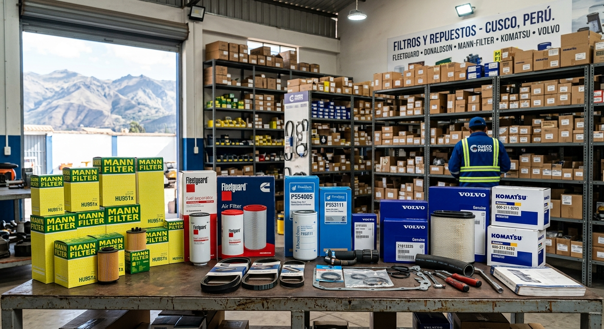

Filtros y repuestos para maquinaria pesada - Cusco, Perú
Contamos con una amplia variedad de filtros y repuestos para todo tipo de maquinaria. Nuestro compromiso es ofrecer productos de alta calidad a precios competitivos, garantizando la satisfacción de nuestros clientes. Ya sea que necesites un filtro de aire, aceite o combustible, o cualquier otro repuesto, en nuestra ferretería encontrarás lo que buscas con asesoramiento experto y un servicio al cliente excepcional.
Ver productos